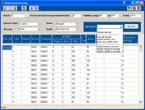
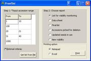

SMT123
From ICISWiki
Contents |
Withdraw Seeds for Viability Monitoring
GRIMS main >
GRIMS functionality >
Seed Management
Previous Next
Overview
The use case is used to ensure that the Genebank collection is viable to ensure the conservation of rice germplasm. All germplasm is subject for germination testing if the current viability that falls below the 85% of it's initial or very first germination testin AND/OR the viability is less than 72%.
User Interface
 |  |  |
Use Case Definition
| Use Case Name | 2.1.1 Withdraw Seeds for Viability Monitoring | ||||||||||||
|---|---|---|---|---|---|---|---|---|---|---|---|---|---|
| Use Case Definition | The use case allows the actor to select seeds for viability monitoring based on the criteria submitted. | ||||||||||||
| User Contacts | n/a | ||||||||||||
| Actors | Genebank Manager | ||||||||||||
| Location | Genebank | ||||||||||||
| Priority | 1 | ||||||||||||
| Typical Course of Events |
| ||||||||||||
| Assumption/s | n/a | ||||||||||||
| Pre-condition/s | |||||||||||||
| Post-condition/s | |||||||||||||
| Primary Pathway/s | Withdraw seeds for viability monitoring | ||||||||||||
| Alternative Pathway/s | n/a | ||||||||||||
| Exception Pathway/s | n/a | ||||||||||||